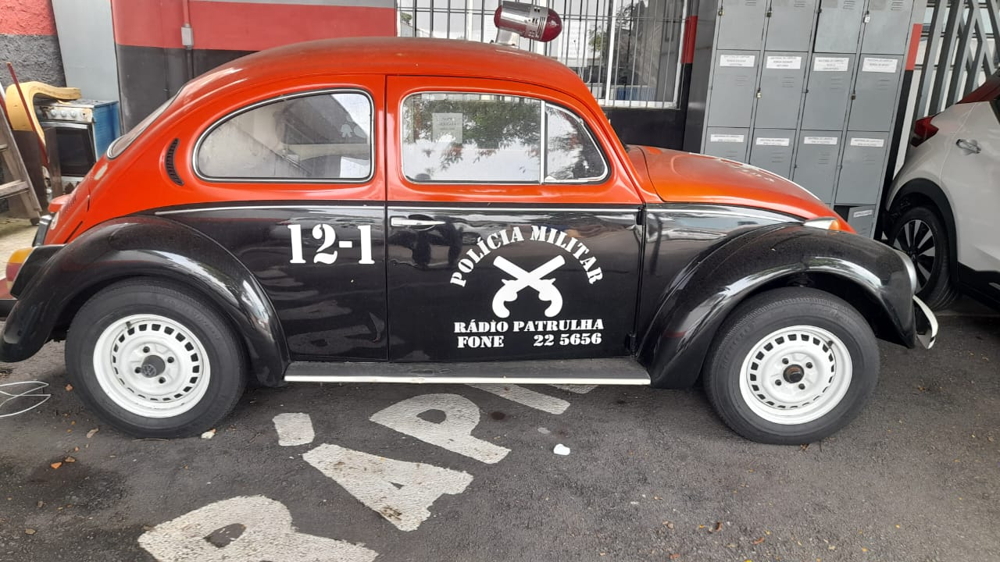

O Fusca Patrulha
O modelo do Fusca utilizado pela Polícia Militar de São Paulo na década de 1970 era o Volkswagen Fusca 1300. Este carro foi amplamente adotado pela polícia devido à sua simplicidade mecânica, resistência, e confiabilidade, especialmente para patrulhamento em áreas urbanas.

É um projeto dedicado à preservação e celebração da icônica viatura "Baratinha", o Fusca da Polícia Militar de São Paulo. Este repositório explora a rica história da viatura que marcou gerações, patrulhando as ruas de São Paulo e tornando-se um símbolo de segurança e presença policial entre as décadas de 1960 e 1980. Aqui, você encontrará conteúdos visuais, documentos históricos, e recriações digitais da famosa "Baratinha", mantendo vivo o legado dessa viatura que se tornou um patrimônio cultural da corporação.
Este projeto é uma homenagem à memória da PM e suas viaturas clássicas, resgatando a importância do Fusca na história da polícia e da cidade.
Especificações Técnicas
Características do Fusca 1300 utilizado pela Polícia Militar nos anos 70:
- Motor: Motor boxer de 4 cilindros, refrigerado a ar, com 1300 cc (cilindradas).
- Potência: Aproximadamente 46 cavalos de potência.
- Velocidade Máxima: Cerca de 115 km/h.
- Transmissão: Manual de 4 marchas.
- Cores Típicas: Os Fuscas da polícia militar eram geralmente pintados em branco, com detalhes em preto e vermelho, além da inscrição "Polícia" e o emblema da corporação.
- Equipamentos Policiais: Eram equipados com sirenes, luzes giratórias (giroflex) no teto e rádio comunicador, que era um grande avanço tecnológico para a época.
- Chassi: Leve e compacto, o que o tornava ideal para manobras rápidas e perseguições em ruas apertadas.
Este Fusca ficou conhecido como Fusca "Patrulha" e tornou-se um ícone da Polícia Militar de São Paulo, ajudando a construir a imagem do "carro de polícia" nas ruas da cidade, especialmente nas décadas de 1960 e 1970. Ele também foi um dos veículos mais queridos pela população, pela sua presença constante nas ruas e pela sua identificação rápida com a segurança pública.